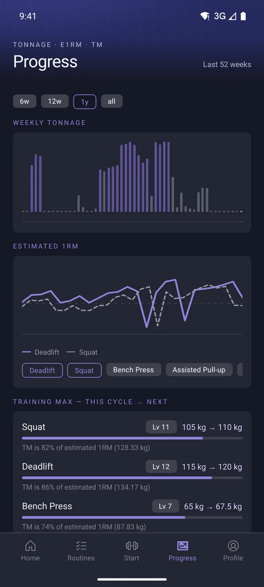
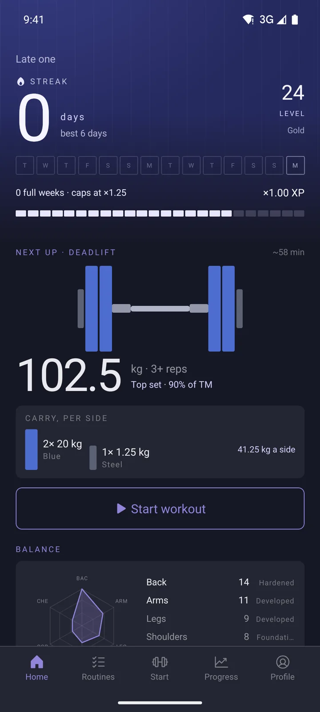
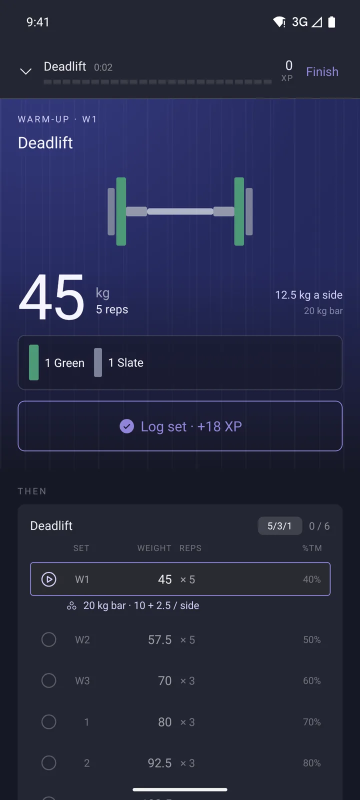
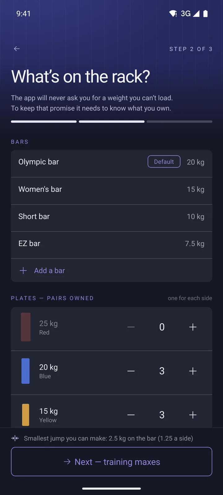
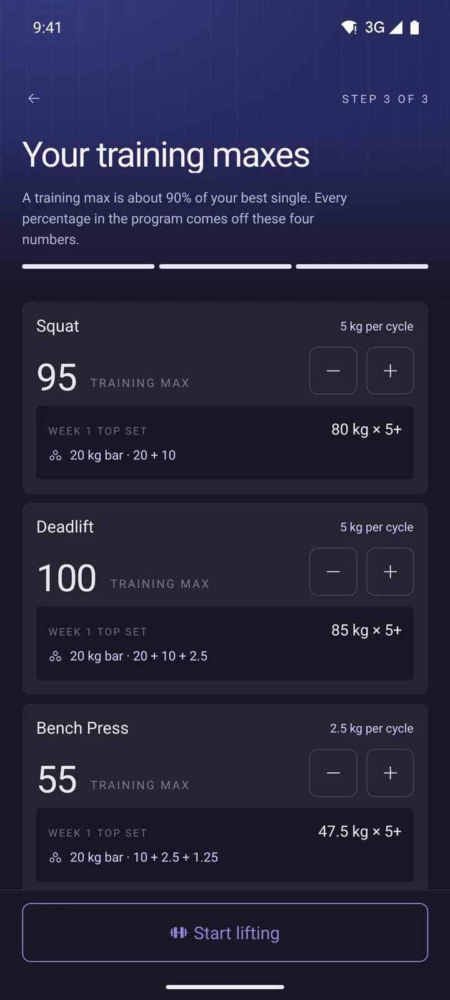
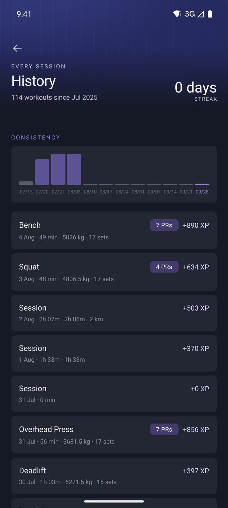
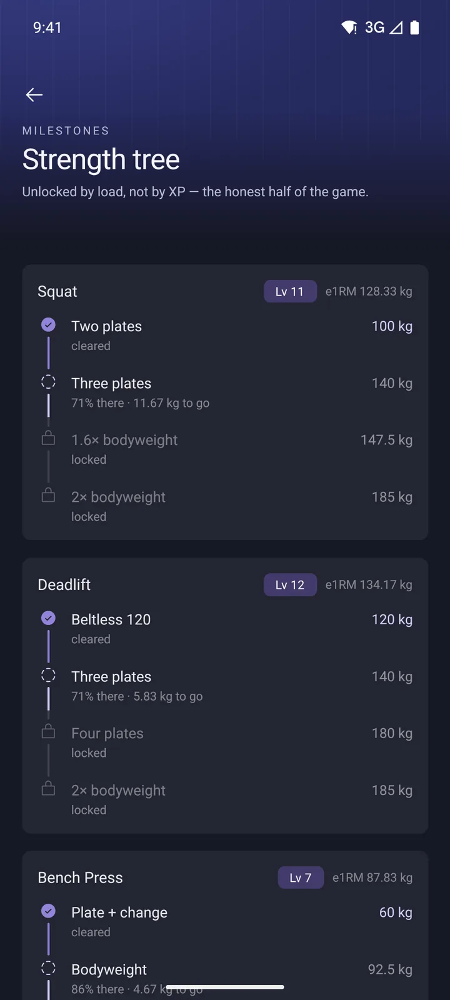
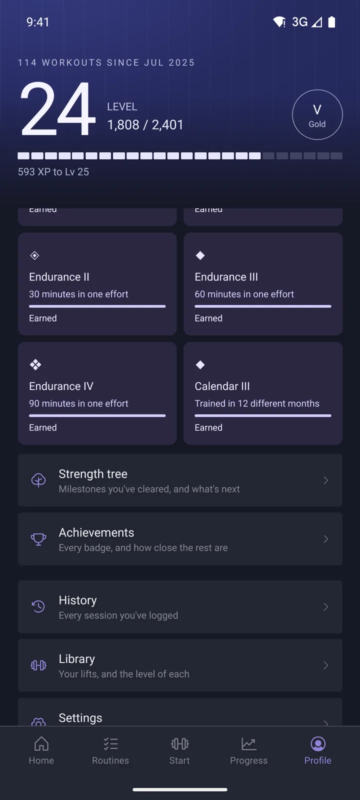
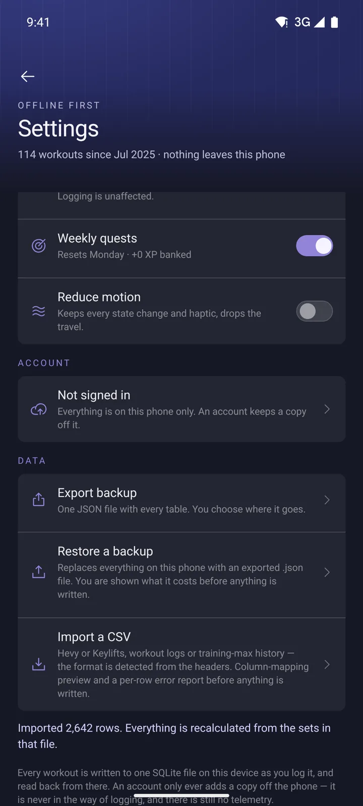
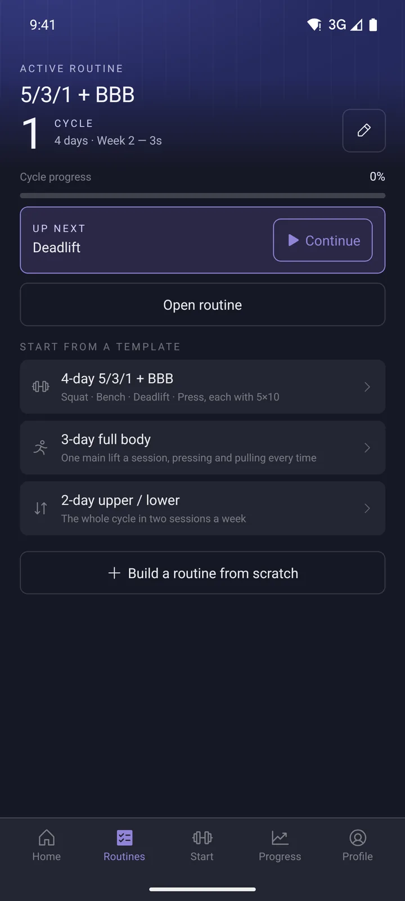

Mobile app · Android · 2026
Overload
A gym logger for lifters running 5/3/1. It tells you exactly which plates to load on every set, progresses each lift by its own rule, and turns the weight you move into levels you actually earned.



~ $ cat why.md
Built for the barbell, not the spreadsheet
Most workout apps tell you to lift 112.5 kg and leave the math to you, halfway through a set, with chalk on your hands. Overload was built around one promise: the answer to "what do I put on the bar?" lives right inside the set row, worked out from the bars and plates you actually own.
It runs completely offline. There's no required account and nothing leaves the phone unless you export it. Every number in the app, from XP to muscle levels to personal records, is calculated from the sets you log, never handed out for showing up.
~ $ ls ./features
01
Plate math inside every set
Each set shows the weight, the reps and the exact plates to load per side, colored like real bumper plates. Change the weight and the loadout updates instantly.
- Solves loads against your own bar and plate inventory
- Never suggests a weight you can't build
- Warm up and working sets planned from your training max
02
Set up in under a minute
A three step onboarding asks for units, bodyweight, the equipment on your rack and your training maxes. From there the whole 5/3/1 + Boring But Big cycle is generated.
- Kilograms or pounds, stored the same way underneath
- Bars and plate pairs you own, with the smallest jump you can make
- Training maxes preview week one's top set before you start


03
Progress you can see
Weekly tonnage, estimated one rep max per lift and training max progression across cycles, over six weeks, twelve weeks, a year or all time.
- Each lift progresses by its own rule: 5/3/1, linear or double progression
- Training max shown against your estimated max, so you know when to bump it

04
A game layer that stays honest
XP comes from tonnage, muscle levels come from the work each lift puts on each muscle, and milestones unlock by load, like two plate squats and a bodyweight bench. It can be switched off completely without touching your logs.
- Strength tree of real milestones per lift
- Achievements, streaks and weekly quests built from last week's numbers
- Muscle balance radar to spot what's lagging


05
Your data stays yours
Every set is written to a SQLite database on the phone as you log it. Backups are a single JSON file you export and restore, and history from Hevy or KeyLifts can be imported from CSV with a column preview and a per row error report.
- No account needed, optional sign in only keeps a copy off the phone
- Restore shows exactly what will be replaced before anything is written


~ $ cat stack.txt
Under the hood
React Native + Expo
Expo Router for navigation, Reanimated for motion, Zustand for state, built as a native Android app with EAS.
SQLite + Drizzle ORM
A typed schema with generated migrations. Every set is saved the moment it's logged.
Pure domain modules
Plate solving, progression, PRs, XP and badges live in plain TypeScript modules with Vitest unit tests.
Optional Supabase backup
An account only keeps a copy off the phone. Logging never waits on the network.